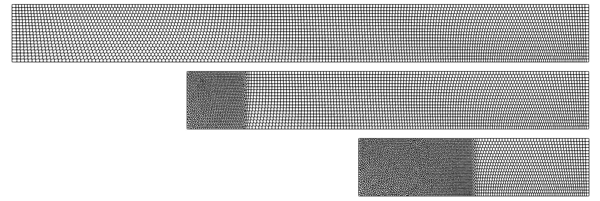

Example 8: Saltzman piston test
In this challenging test, the domain will vary with time. We study a piston of length 1 and width 0.1 filled with ideal gas which is initially at rest. Starting from $t=0$, the piston is compressed at a uniform rate at speed equal to 1. This produces a strong shockwave, whose characteristics can be computed analytically from Rankine-Hugeniot conditions. The simulation is terminated at $t = t_end$. Unknown things will happen if $t_end >= 1.0$, maybe it will even destroy the universe!
module piston
include("../src/LagrangianVoronoi.jl")
using .LagrangianVoronoi, WriteVTK, LinearAlgebra, Polyester
using LaTeXStrings, DataFrames, CSV, Plots, Measures, Match
const xlims = (0.0, 1.0)
const ylims = (0.0, 0.1)
const rho0 = 1.0
const P0 = 1e-4
const gamma = 5/3
const dr = 1/100
const CFL_early = 0.1
const t_early = 0.01
const CFL = 0.1
const t_end = 0.6
const nframes = 100
const export_path = "results/piston"
function ic!(p::VoronoiPolygon)
p.rho = rho0
p.mass = p.rho*area(p)
p.P = P0
p.e = 0.5*norm_squared(p.v) + p.P/(p.rho*(gamma - 1.0))
end
function cut_domain!(grid::VoronoiGrid, t::Float64)
rect = Rectangle(xlims = (t, 1.0), ylims = ylims)
grid.boundary_rect = rect
grid.cropping_rect = rect
remesh!(grid)
@batch for p in grid.polygonschange density adiabatically
if isleftbdarycell(p)
rho_old = p.rho
P_old = p.P
p.rho = p.mass/area(p)
p.P = P_old*(p.rho/rho_old)^gamma
p.e = 0.5*norm_squared(p.v) + p.P/(p.rho*(gamma - 1.0))
end
end
end
function isleftbdarycell(p::VoronoiPolygon)::Bool
for e in boundaries(p)
if e.label == BDARY_LEFT
return true
end
end
return false
end
function dirichlet_bc!(grid::VoronoiGrid)
@batch for p in grid.polygons
if isleftbdarycell(p)
p.v = VECX + p.v[2]*VECY
p.e = 0.5*norm_squared(p.v) + p.P/(p.rho*(gamma - 1.0))
end
end
end
function move_points!(grid::VoronoiGrid, t::Float64, dt::Float64)
@batch for p in grid.polygons
p.x += dt*p.v
end
remesh!(grid)
end
function populate_skewed!(grid::VoronoiGrid{T}; ic!::Function) where T <: VoronoiPolygon
N = round(Int, 1.0/grid.dr)
M = round(Int, 0.1/grid.dr)
for x1 in range(-1.0, 2.0, 3N)
for x2 in range(0.0, 0.1, M)
x = RealVector(x1, x2) + 0.5*RealVector(grid.dr, grid.dr)
x = RealVector(x[1] + (0.1 - x[2])*sin(pi*x[1]), x[2])
if isinside(grid.boundary_rect, x)
push!(grid.polygons, T(x=x))
end
end
end
remesh!(grid)
@batch for p in grid.polygons
ic!(p)
end
return
end
mutable struct Simulation <: SimulationWorkspace
grid::GridNS
solver::PressureSolver
E::Float64
S::Float64
t::Float64
Simulation() = begin
domain = Rectangle(xlims = xlims, ylims = ylims)
grid = GridNS(domain, dr)
populate_skewed!(grid, ic! = ic!)
solver = PressureSolver(grid)
dirichlet_bc!(grid)
return new(grid, solver, 0.0, 0.0, 0.0)
end
end
function vbc(_::RealVector, bdary::Int)::RealVector
if bdary == BDARY_LEFT
return VECX
end
return VEC0
end
function step!(sim::Simulation)
dt = (sim.t < t_early ? CFL_early : CFL)*dr
ideal_eos!(sim.grid, gamma; Pmin = P0)
find_pressure!(sim.solver, dt; boundary_velocity = vbc)
pressure_step!(sim.grid, dt)
find_D!(sim.grid)
viscous_step!(sim.grid, dt)
find_dv!(sim.grid, dt, 1.0)
relaxation_step!(sim.grid, dt)
dirichlet_bc!(sim.grid)
move_points!(sim.grid, sim.t, dt)
sim.t += dt
cut_domain!(sim.grid, sim.t)
return
endLet us plot the total energy and entropy.
function postproc!(sim::Simulation)
sim.E = 0.0
sim.S = 0.0
for p in sim.grid.polygons
sim.E += p.mass*p.e
sim.S += p.mass*log(abs(p.P/abs(p.rho)^gamma))
end
println("t = $(sim.t)")
println("energy = $(sim.E)")
println("entropy = $(sim.S)")
println()
end
function main()
if !ispath(export_path)
mkpath(export_path)
@info "created a new path: $(export_path)"
end
pvd_c = paraview_collection(joinpath(export_path, "cells.pvd"))
pvd_p = paraview_collection(joinpath(export_path, "points.pvd"))
nframe = 0
sim = Simulation()
milestones = collect(range(t_end, 0.0, nframes)) # save the data here
vtp_vars = (:rho, :v, :e, :P, :phase, :mass)
while sim.t < t_end
step!(sim)
if sim.t > milestones[end]
@show sim.t
postproc!(sim)
println()
filename= joinpath(export_path, "cframe$(nframe).vtp")
pvd_c[sim.t] = export_grid(sim.grid, filename, vtp_vars...)
filename= joinpath(export_path, "pframe$(nframe).vtp")
pvd_p[sim.t] = export_points(sim.grid, filename, vtp_vars...)
pop!(milestones)
nframe += 1
end
end
vtk_save(pvd_c)
vtk_save(pvd_p)
x = range(0.6, 1.0, 200)
rho = [point_value(sim.grid, RealVector(_x, 0.05), p -> p.rho) for _x in x]
P = [point_value(sim.grid, RealVector(_x, 0.05), p -> p.P) for _x in x]
v = [point_value(sim.grid, RealVector(_x, 0.05), p -> p.v[1]) for _x in x]
csv_data = DataFrame(x=x, rho=rho, P=P, v=v)
CSV.write(string(export_path, "/linedata.csv"), csv_data)
plotdata()
print_l1_error(sim.grid)
println()
print_l2_error(sim.grid)
end
function plotdata()
for var in (:rho, :P, :v)
plotdata(var)
end
end
function plotdata(var::Symbol)
csv_data = CSV.read(string(export_path, "/linedata.csv"), DataFrame)
x_shock = 0.8
x_exact = [t_end, x_shock, nextfloat(x_shock), 1.0]
y_sim, ylabel, y0, y1, color = @match var begin
:rho => (csv_data.rho, L"\rho", 4.0, 1.0, :orange)
:P => (csv_data.P, L"P", 2*(gamma-1.0), P0, :royalblue)
:v => (csv_data.v, L"v", 1.0, 0.0, :teal)
end
y_exact = [(x <= x_shock ? y0 : y1) for x in x_exact]
plt = plot(
x_exact,
y_exact,
label = "EXACT",
linewidth = 2,
color = :black,
xlabel = L"x",
ylabel = ylabel,
bottom_margin = 5mm,
ylims = (0.0, max(y0,y1) + 0.5)
)
plot!(plt,
csv_data.x,
y_sim,
label = "SIMULATION",
markerstrokewidth = 1,
markersize = 3,
color = color,
marker = :circ
)
savefig(plt, string(export_path, "/$(string(var)).pdf"))
return
end
function print_l1_error(grid::VoronoiGrid)
x_shock = 0.8
for var in (:rho, :P, :v)
err = 0.0
y0, y1 = @match var begin
:rho => (4.0, 1.0)
:P => (2*(gamma-1.0), P0)
:v => (1.0, 0.0)
end
for p in grid.polygons
A = area(p)
y = (p.x[1] <= x_shock ? y0 : y1)
if (var != :v)
err += A*abs(getproperty(p, var) - y)
else
err += A*abs(getproperty(p, var)[1] - y)
end
end
println("$(var): l1 error = $(err)")
end
end
function print_l2_error(grid::VoronoiGrid)
x_shock = 0.8
for var in (:rho, :P, :v)
err = 0.0
y0, y1 = @match var begin
:rho => (4.0, 1.0)
:P => (2*(gamma-1.0), P0)
:v => (1.0, 0.0)
end
for p in grid.polygons
A = area(p)
y = (p.x[1] <= x_shock ? y0 : y1)
if (var != :v)
err += A*abs(getproperty(p, var) - y)^2
else
err += A*abs(getproperty(p, var)[1] - y)^2
end
end
println("$(var): l2 error = $(sqrt(err))")
end
end
function linear_regression(x, y)
N = length(x)
logx = log10.(x)
logy = log10.(y)
A = [logx ones(N)]
b = A\logy
return b
end
function make_convergence_graph()
data = CSV.read(joinpath(export_path, "l2_convergence_data.csv"), DataFrame)
x = log10.(data.N)
y = [log10.(data.rho) log10.(data.P) log10.(data.v)]
eoc_rho = linear_regression(data.N, data.rho)[1]
eoc_p = linear_regression(data.N, data.P)[1]
eoc_v = linear_regression(data.N, data.v)[1]
xlabel = L"\log N"
ylabel = L"\log \epsilon"
rho_label = L"\rho"*" (EOC = $(-round(eoc_rho, digits=2)))"
p_label = L"p"*" (EOC = $(-round(eoc_p, digits=2)))"
v_label = L"v"*" (EOC = $(-round(eoc_v, digits=2)))"
plt = plot(x, y, xlabel=xlabel, ylabel=ylabel, label = [rho_label p_label v_label], marker = :hex, axis_ratio = 1.0)
savefig(plt, joinpath(export_path, "l2_convergence.pdf"))
end
endThis page was generated using Literate.jl.